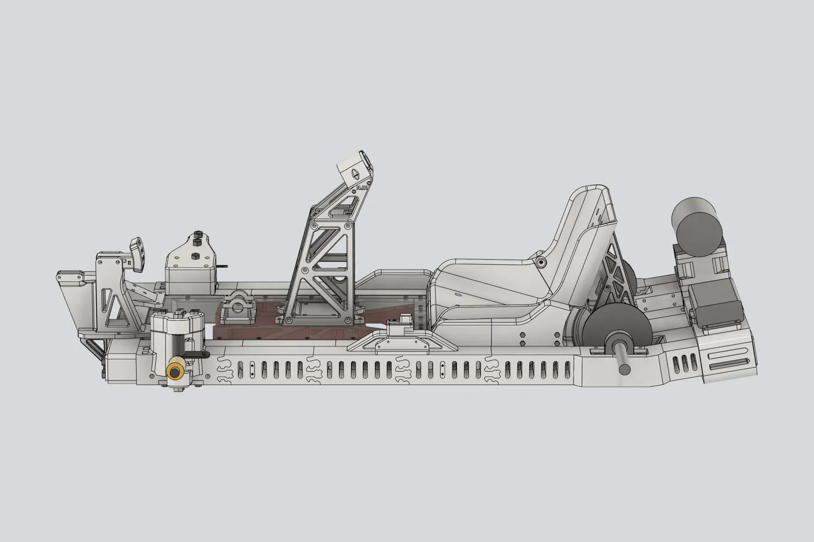

03 · 설계 원칙
출력하고 조립할 수 있게
설계했습니다
화면에서만 그럴듯한 설계는 의미가 없습니다.
프린터로 출력할 수 있고, 출력한 부품을 실제로 조립할 수 있어야 했습니다.
1
부품부터 정하기
바퀴, 축, 모터, 모터 컨트롤러, 조향 부품은 시판품을 먼저 구했습니다. 프레임은 그 부품들의 치수에 맞춰 설계했습니다.
2
출력 방향까지 고려하기
3D 프린팅 부품은 층과 층 사이가 가장 약합니다. 부품마다 출력 방향을 먼저 정하고, 그 방향으로 큰 힘이 걸리지 않게 형상을 그렸습니다.
3
나중에 보강할 수 있게
부품끼리는 도브테일처럼 서로 걸리게 끼운 뒤 본드로 고정했습니다. 출력물이 줄어드는 것을 고려해 공차는 0.1~0.3mm로 잡았습니다. 약할 만한 곳에는 볼트 구멍을 미리 내 두어, 보강 부품을 나중에 덧댈 수 있게 했습니다.
4
맞을 때까지 다시 출력
구조가 복잡해서 한 번에 맞는 부품이 드물었습니다. 시제품을 수십 개 출력해 하나씩 맞췄고, 가장 큰 부품은 한 번 출력하는 데 24시간이 넘게 걸렸습니다.


소재는 전부 PLA, 프린터는 뱀부랩 X1CC입니다.